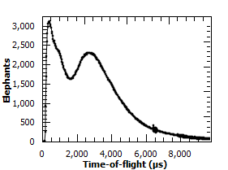

Matrix Workspace#
A Matrix Workspace is a generic name for a family which contains measured (or derived) data (Y) with associated errors (E) and an axis (X) giving information about where the measurement was made. The Matrix Workspace forms a 2D structure, more details on this will be provided below. This is the most common structure for storing data in Mantid. This covers several more detailed workspace types including:
Workspace2D - A workspace for holding 2D, accumulated data in memory, this is the most commonly used to store histograms.
EventWorkspace - A workspace that retains the individual neutron event data.
What information is in a Matrix Workspace#
All Matrix Workspaces contain one or more rows of data. A single row is formed of a set of arrays (Y, E, X). For example, the output of a single detector in a white-beam measuring wavelength would form a single row. In this scenario The x-axis (or “horizontal axis”) has units of length for wavelength, and Y would be the counts at each wavelength. The rows may have no correlation to each other. However, they are usually marked and sorted by some other attribute, such as detector number, or scattering angle. We call this row axis the “vertical axis”. Axis have Units.
Also they may contain:
Working with Matrix Workspaces in Python#
As alluded to above, Matrix Workspace is an abstraction. Matrix Workspace provides access to the majority of the common information for all 2D workspaces in its family, without needing to know all the details of how that data is actually stored.
Matrix Workspaces have all the data and operations of the base Workspace class, but add operations to access the 2D data itself a useful way.
You can look at the Matrix Workspace API reference for a full list of properties and operations, but here are some of the key ones.
Accessing Workspaces#
The methods for getting a variable to a Matrix Workspace is the same as shown in the Workspace help page.
If you want to check if a variable points to something that is a Matrix Workspace you can use this:
from mantid.simpleapi import *
from mantid.api import MatrixWorkspace
histoWS = CreateSampleWorkspace(WorkspaceType="Histogram")
if isinstance(histoWS, MatrixWorkspace):
print(histoWS.name() + " is a " + histoWS.id() + \
" and can be treated as a Matrix Workspace")
print("\nFor more Matrix Workspace types")
eventWS = CreateSampleWorkspace(WorkspaceType="Event")
svWS = CreateSingleValuedWorkspace()
tableWS = CreateEmptyTableWorkspace()
groupWS = GroupWorkspaces("histoWS,eventWS")
mdWS = CreateMDWorkspace(Dimensions=3, Extents='-10,10,-10,10,-10,10', Names='A,B,C', Units='U,U,U')
mdHistoWS=CreateMDHistoWorkspace(Dimensionality=2,Extents='-3,3,-10,10',SignalInput=range(0,100),ErrorInput=range(0,100),\
NumberOfBins='10,10',Names='Dim1,Dim2',Units='MomentumTransfer,EnergyTransfer')
myWorkspaceList = [histoWS,eventWS,svWS,tableWS,mdWS,mdHistoWS]
print("Is Matrix Workspace?\tType")
for ws in myWorkspaceList:
print("{0}\t{1}".format(isinstance(ws, MatrixWorkspace), ws.id()))
Output:
histoWS is a Workspace2D and can be treated as a Matrix Workspace
For more Matrix Workspace types
Is Matrix Workspace? Type
True Workspace2D
True EventWorkspace
True WorkspaceSingleValue
False TableWorkspace
False MDEventWorkspace<MDLeanEvent,3>
False MDHistoWorkspace
Matrix Workspace Properties#
# To find out the number of histograms in a workspace use getNumberHistograms()
print("number of histograms = {0}".format(ws.getNumberHistograms()))
# To find out the number of bins along the x-axis use blocksize()
print("number of bins = {0}".format(ws.blocksize()))
# To find out the bin containing a value use yIndexOfX()
print("bin index containing 502.2 for a histogram (0 by default) = {0}".format(ws.yIndexOfX(502.2)))
print("bin index containing 997.1 for histogram 272 = {0}".format(ws.yIndexOfX(997.1,272)))
# To find a workspace index from a spectrum number
print("workspace index for histogram 272 = {0}".format(ws.getIndexFromSpectrumNumber(272)))
# To get the Run Number use getRunNumber()
print("run number = {0}".format(ws.getRunNumber()))
Output:
number of histograms = 922
number of bins = 2663
bin index containing 502.2 for a histogram (0 by default) = 19
bin index containing 997.1 for histogram 272 = 39
workspace index for histogram 272 = 271
run number = 11015
Instrument#
You can get access to the Instrument for a workspace with
instrument = ws.getInstrument()
For the properties and operations of the instrument look at the Instrument help.
Run - to access logs, and other run information#
You can get access to the Run for a workspace with
run = ws.getRun()
For the properties and operations of the run object and how to access log data look at the Run help.
Axes#
Axes are used primarily for labeling plots, but are also used as validation criteria for several algorithms. You can list out the axes of a workspace using the following code.
from mantid.simpleapi import CreateSampleWorkspace
ws = CreateSampleWorkspace()
for i in range(ws.axes()):
axis = ws.getAxis(i)
print("Axis {0} is a {1}{2}{3}".format(i,
"Spectrum Axis" if axis.isSpectra() else "",
"Text Axis" if axis.isText() else "",
"Numeric Axis" if axis.isNumeric() else ""))
unit = axis.getUnit()
print("\t caption:{0}".format(unit.caption()))
print("\t symbol:{0}".format(unit.symbol()))
Output:
Axis 0 is a Numeric Axis
caption:Time-of-flight
symbol:microsecond
Axis 1 is a Spectrum Axis
caption:Spectrum
symbol:
Setting the axisLabel
from mantid.simpleapi import CreateSampleWorkspace
ws = CreateSampleWorkspace()
axis = ws.getAxis(1)
# Create a new axis
axis.setUnit("Label").setLabel('Temperature', 'K')
unit = axis.getUnit()
print("New caption:{0}".format(unit.caption()))
print("New symbol:{0}".format(unit.symbol()))
Output:
New caption:Temperature
New symbol:K
Replacing the Axis
from mantid.api import NumericAxis
axis = ws.getAxis(1)
unit = axis.getUnit()
print("Old caption:{0}".format(unit.caption()))
print("Old symbol:{0}".format(unit.symbol()))
# Create a new axis
newAxis = NumericAxis.create(ws.getNumberHistograms())
newAxis.setUnit("Label").setLabel('Temperature', 'K')
# Set the vertical axis values
for idx in range(0, ws.getNumberHistograms()):
tempValue = idx*3+25 # some made up value
newAxis.setValue(idx, tempValue)
# Replace axis 1 with the new axis
ws.replaceAxis(1, newAxis)
axis = ws.getAxis(1)
unit = axis.getUnit()
print("New caption:{0}".format(unit.caption()))
print("New symbol:{0}".format(unit.symbol()))
print("New values: {0}".format(axis.extractValues()))
Output:
Old caption:Spectrum
Old symbol:
New caption:Temperature
New symbol:K
New values: [ 25. 28. ... 2785. 2788.]
Setting the Y Label

print(ws.YUnitLabel())
ws.setYUnitLabel("Elephants")
print(ws.YUnitLabel())
Output:
Counts
Elephants
Plotting#
You can specify the type of plot to be used when plotting a Matrix Workspace. The following plot types are available:
plot, marker, errorbar_x, errorbar_y, errorbar_xy. By default all Matrix Workspaces will be
treated as a plot type and this value will not auto-update or affect existing workspace plots. Changing the plot
type will affect the way the data is displayed. An example of the different plot types can be seen in mantid.plots.
Below is a simple example changing the plot type, a full example is available in the plotting gallery page.
print(ws.getPlotType())
ws.setPlotType("marker")
print(ws.getPlotType())
Output:
plot
marker
Setting Plot Marker
When plotting multiple marker workspaces it may be necessary to set the marker type for each workspace. If no marker is set, the default will be used from the Properties File. Marker style can be changed using the following code:
ws.setMarkerStyle("circle")
print(ws.getMarkerStyle())
Output:
circle
Matrix Workspace Operations#
# To create a copy of a workspace
wsClone = ws.clone()
# or
wsClone = CloneWorkspace(ws)
# To check if two variables point to the same workspace
if ws == wsClone:
print("They are the same workspace")
# To check if two workspaces have equal values
if ws.equals(wsClone, tolerance = 0.05):
print("They have the same data")
# To create a copy of a workspace
wsWavelength = ws.convertUnits(Target="Wavelength")
# or
wsWavelength = ConvertUnits(ws,Target="Wavelength")
# To rebin the workspace
ws = ws.rebin(Params = 200)
# or
ws = Rebin(ws, Params = 200)
# Mask detectors or spectra (or use the MaskDetectors algorithm
ws.maskDetectors(SpectraList=[2,3,4])
ws.maskDetectors(WorkspaceIndexList=range(101,105))
ws.maskDetectors(DetectorList=[150,160,170])
# To delete the workspace
ws.delete()
# or
DeleteWorkspace(wsClone)
# Do not access the python variable again as you will get a RuntimeError
# e.g. RuntimeError: Variable invalidated, data has been deleted.
Accessing Data#
A Matrix Workspace is essentially a 2D list of binned data where a workspace index, starting at 0, gives access to the data fields in each spectra.
The data is accessed using the readX(), readY() and readE() commands. Each of these commands takes a number that refers to the index on the workspace and returns a list of the data for that workspace index, i.e
# Get the Y vector for the second row of data
y_data2 = ws.readY(1)
for y in y_data2:
print(y)
# Or in loop access. Print the first value in all spectra
for index in range(0, ws.getNumberHistograms()):
#Note the round brackets followed by the square brackets
print(ws.readY(index)[0])
There are more examples how to Extract and manipulate workspace data here.
Workspace algebra#
Matrix Workspaces can have algebraic operations applied to them directly without the need to call a specific algorithm, e.g. Plus
The expected operations of +,-,*,/ are supported with either a single number or another workspace as the second argument, e.g.
w1 = mtd['workspace1']
w2 = mtd['workspace2']
# Sum the two workspaces and place the output into a third
w3 = w1 + w2
# Multiply the new workspace by 2 and place the output into a new workspace
w4 = w3 * 2
It is also possible to replace one of the input workspaces using one of +=,-=,*=,/= e.g.
# Multiply a workspace by 2 and replace w1 with the output
w1 *= 2.0
# Add 'workspace2' to 'workspace1' and replace 'workspace1' with the output
w1 += w2
Other Information on Workspaces#
- Workspace - Overview of workspaces, which include the following classes:
MatrixWorkspace - A base class that contains among others:
WorkspaceSingleValue - Holds a single number (and X & error value, if desired). Mainly used for workspace algebra, e.g. to divide all bins in a 2D workspace by a single value.
Workspace2D - A workspace for holding two dimensional data in memory, this is the most commonly used workspace.
EventWorkspace - A workspace that retains the individual neutron event data.
TableWorkspace - A workspace holding data in rows of columns having a particular type (e.g. text, integer, …).
WorkspaceGroup - A container for a collection of workspaces. Algorithms given a group as input run sequentially on each member of the group.
Category: Concepts